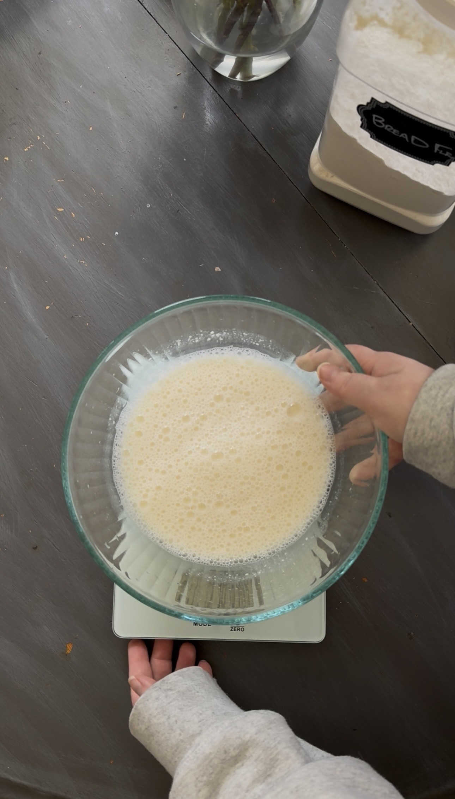
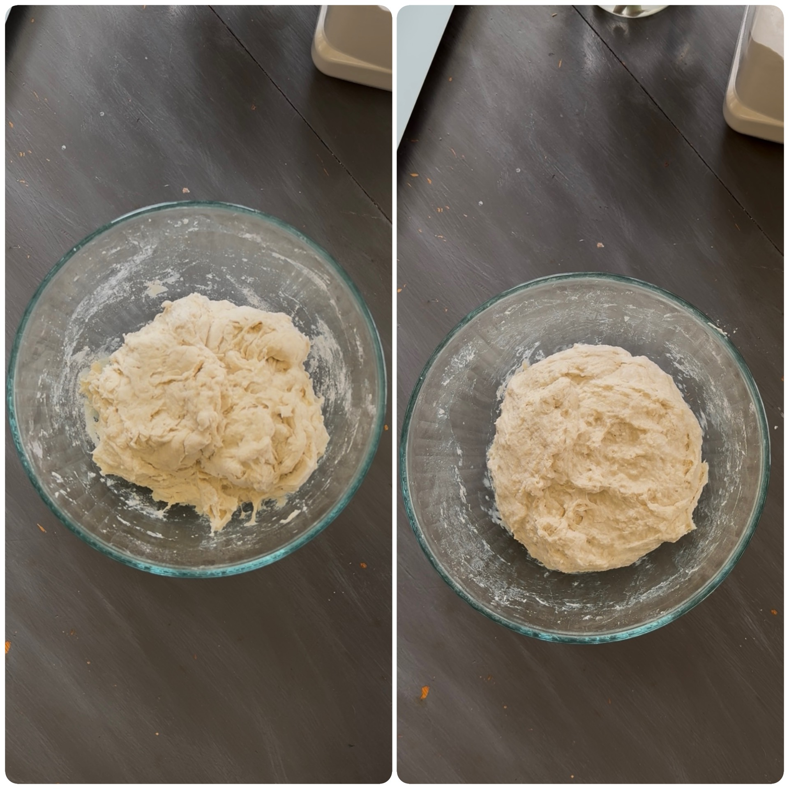
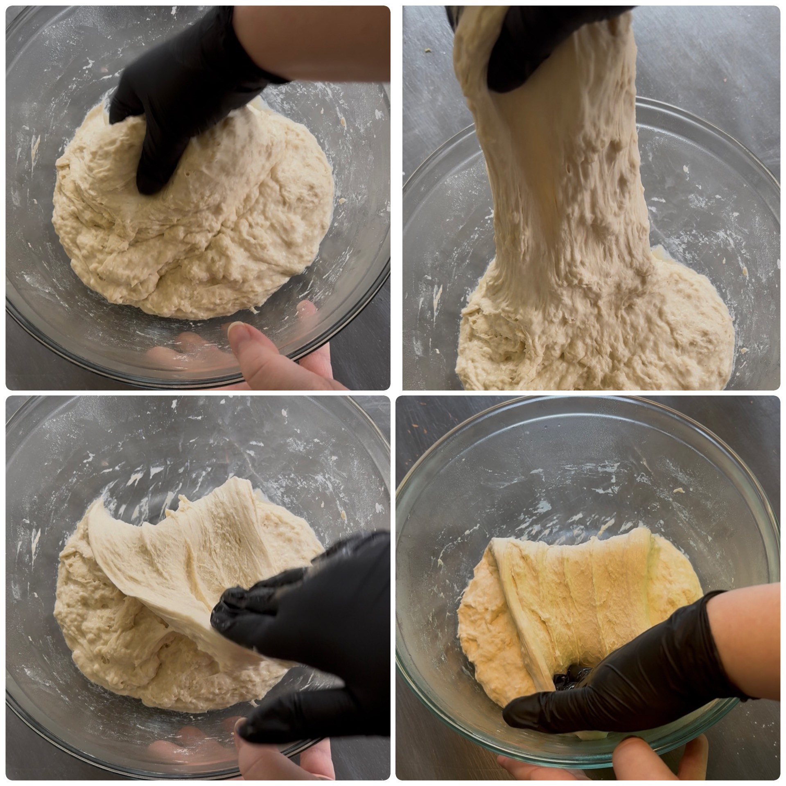
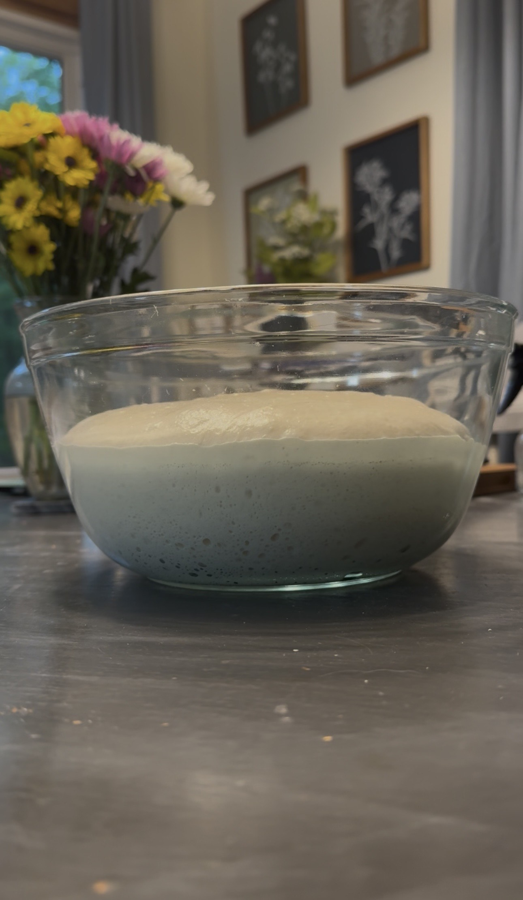
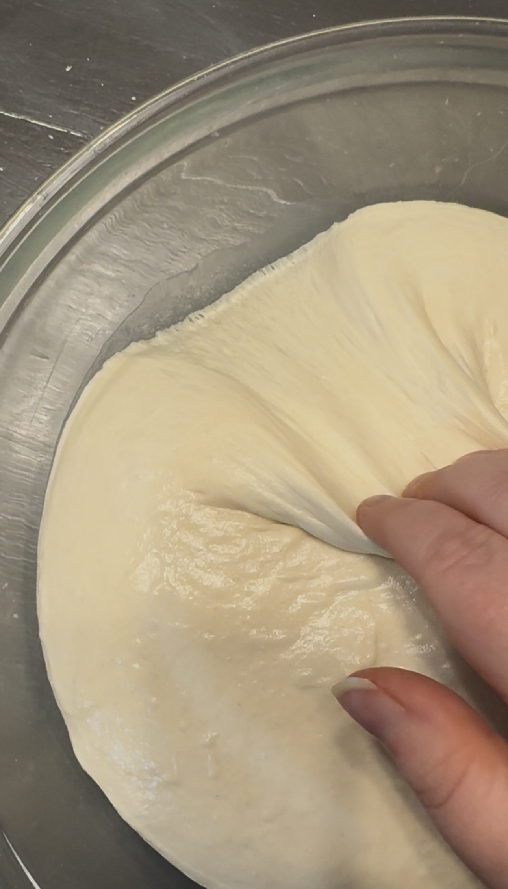
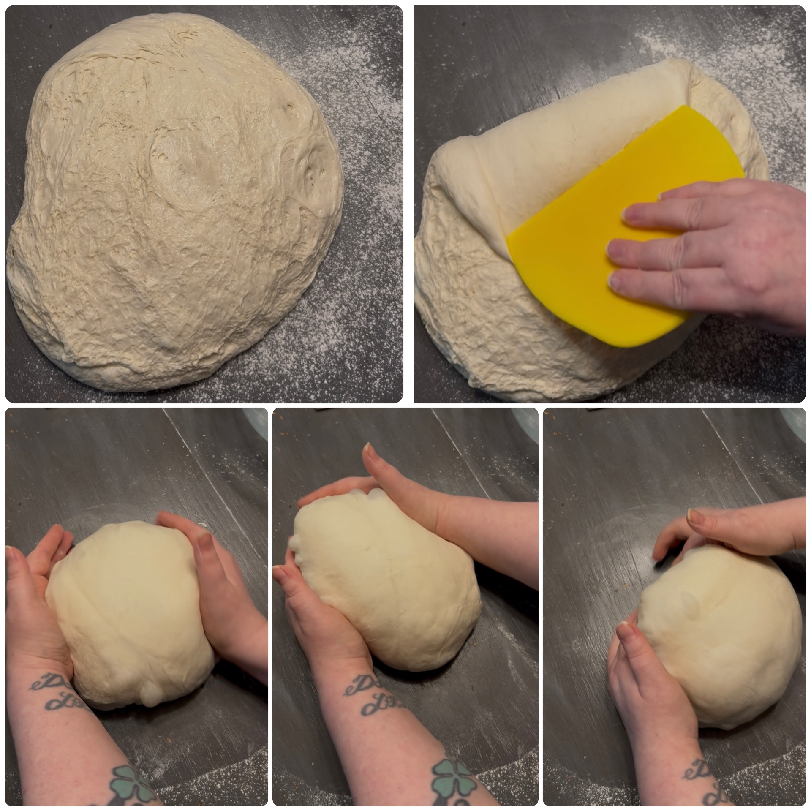
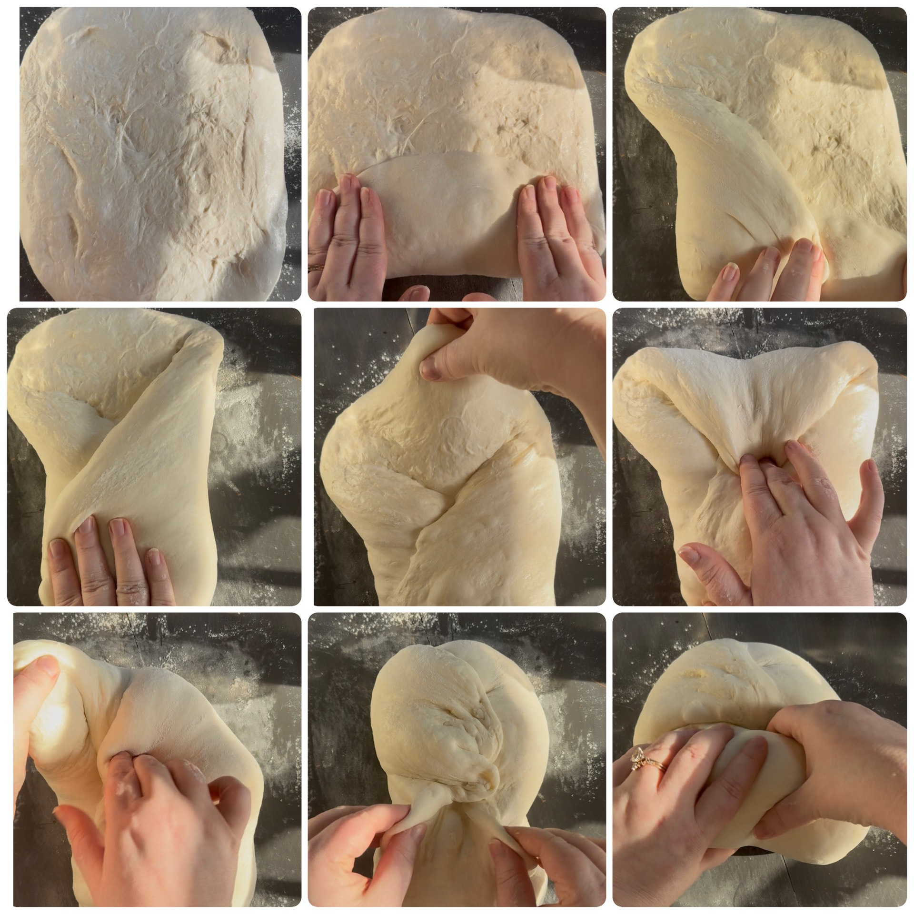
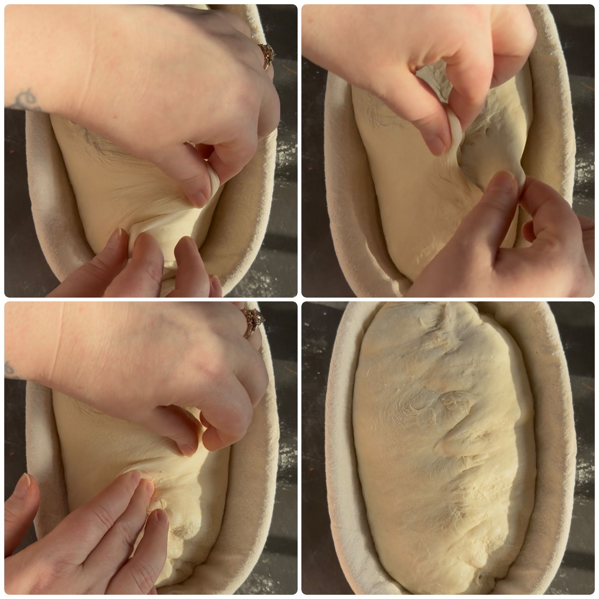
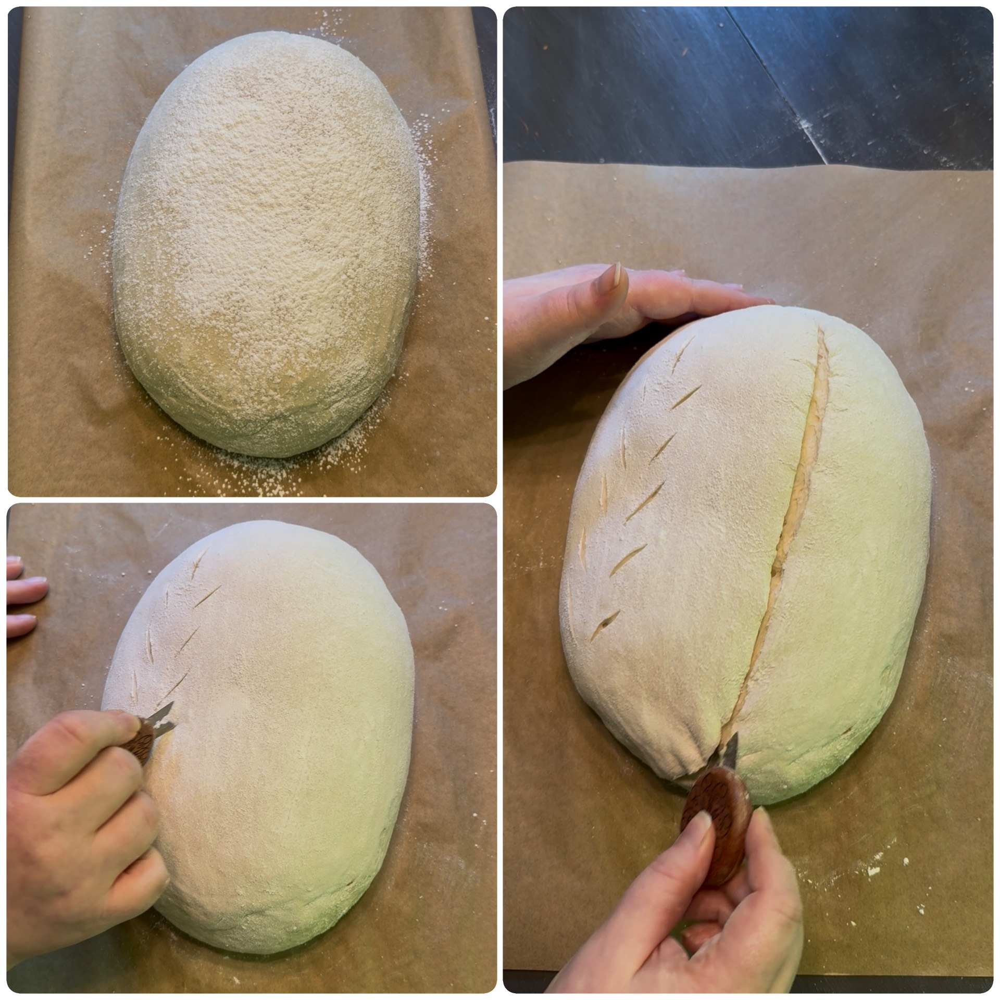
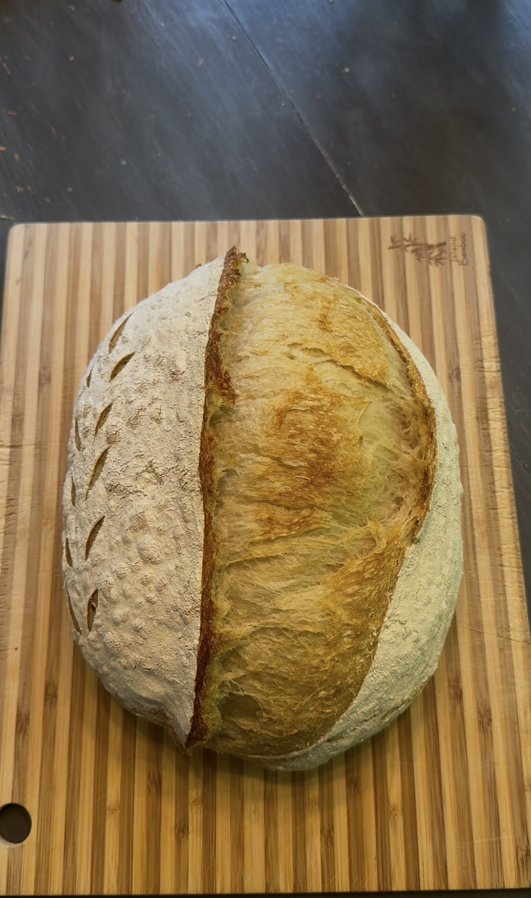

🥖 Classic Loaf
A simple everyday sourdough loaf with a crisp crust, soft airy crumb, and lower hydration dough that's easier for beginners to handle.
🧾 Ingredients
- 525g bread flour
- 350g warm water (78–82°F / 25–28°C)
- 125g active sourdough starter (bubbly and recently fed)
- 12g salt
🥣 Mix the Dough
Add 350g warm water to a large mixing bowl.
Add 125g active sourdough starter and whisk until mostly dissolved and the water looks cloudy and frothy.

Add 525g bread flour and 12g salt.
Mix until a shaggy dough forms.
Switch to clean, slightly wet hands or gloves and squeeze/fold the dough until no dry flour remains. The dough will still look a little rough and sticky at this stage — that's normal.

Cover the bowl with a lid, damp towel, or shower cap and let rest for 30–60 minutes.
✋ Stretch and Folds
After the rest, you'll begin stretch and folds to strengthen the dough. You'll do 4 rounds total, spaced 30 minutes apart.
To perform one round:
- Wet your hand lightly so the dough doesn't stick
- Grab one edge of the dough
- Slowly stretch it upward
- Fold it back down into the center
- Rotate the bowl and repeat on all four sides
That completes one round.

Cover and rest 30 minutes between each round. Each round, the dough will become smoother, stronger, and more elastic.
🌤️ Rest & Rise (Bulk Fermentation)
Bulk fermentation begins as soon as you mix your dough and happens at room temperature. It includes the stretch and folds.
After your final stretch and fold, keep the dough covered and let it rest on your counter until it becomes light, airy, and puffy. Bulk fermentation usually takes about 6–12 hours total from the time you first mix the dough. Warmer kitchens and stronger starters ferment faster, while cooler kitchens may take longer.


Pre-shape:
- Lightly flour your counter and gently turn out the dough.
- Gather the edges of the dough into the center to form a loose ball.
- Flip it over so the smooth side is facing up and the seam is underneath.
- Let it rest for 15–20 minutes to relax before final shaping.

🍞 Final Shape (Batard)
Lightly flour the top of the dough and flip it over. Gently stretch into a rectangle.
- Step 1: Fold the bottom edge up one-third of the way.
- Step 2: Fold the left side into the center, then fold the right side over it like an envelope.
- Step 3: Pull the top edge down over the center.
- Step 4: Pinch and stitch the dough down the center to anchor it.
- Step 5: Roll the dough into a tight log, then pinch both ends firmly closed.

🧺 Proofing
Lightly flour a banneton or towel-lined bowl with all-purpose flour.
Place the dough seam-side up into the banneton. Let rest uncovered for 10 minutes.
Then gently stitch the seam closed by pulling small sections of dough from each side toward the center, like lacing it together. This helps build tension for better oven spring.

Lightly dust the top with flour and cover. Place in the refrigerator overnight or for 8–16 hours.
❄️ Cold Proof
Cover the dough and refrigerate for 8–16 hours or overnight. This slow fermentation develops flavor and makes the dough easier to score before baking.
🔥 Baking
Preheat your oven to 500°F (260°C) with a Dutch oven inside for at least 30 minutes.
Keep the dough in the refrigerator until right before baking. Remove the dough from the fridge. Lightly dust the top with flour, then turn it out onto parchment paper.
✂️ Scoring
Lightly dust the top of the dough with flour before scoring. This helps prevent sticking. If you have rice flour, you can use it instead for an even cleaner, more defined finish — but all-purpose flour works just fine.
Using a sharp blade or bread lame, make one long confident cut about ¼ inch deep at a slight angle across the dough. This score allows the bread to expand in the oven and creates the signature "ear." Optional decorative scores can be added with very shallow surface cuts.

Carefully lift the parchment paper and transfer the dough into the hot Dutch oven. Cover with the lid.
- Bake for 30 minutes at 450°F (232°C) with the lid on.
- Remove the lid, reduce to 425°F (218°C), and bake another 15–20 minutes until deep golden brown.
Remove the bread from the Dutch oven and place on a cooling rack. Let cool completely before slicing so the crumb can finish setting inside.
